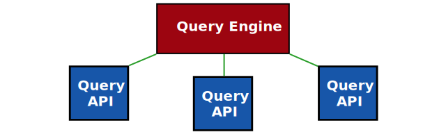

Data is highly decentralized
- Produced by governments, companies, individuals, …
- Stored at different locations across the world
- Consumed through interactive applications, processes, intelligent agents, …
Decentralized data integration is challenging for user-facing app developers
-
Discovering data
How can I find data sources? How can I find data within a source?
-
Combining data
How to combine data across different data sources?
-
Preserving privacy
How to not leak sensitive data?
Query engines abstract access to decentralized data
Hide the complexities of reading and writing for app developers
↔
 ↔
↔

Image credit
Query processing over centralized data

Centralization not always possible

-
Private data
Technical and legal reasons
-
Evolving data
Requires continuous re-indexing
-
Web scale data
Indexing the whole Web is infeasible (for non-tech-giants)
How to query over decentralized data?

-
Data and query engine are not collocated
Query engine runs on a separate machine
-
Not just one datasets
Data is spread over the Web into multiple documents
Approaches for querying over decentralized data
-
Federated Query Processing
Distributing query execution across known sources
-
Link Traversal Query Processing
Local query execution over sources that are discovered by following links
Federation distributes query over APIs

-
Clients do limited effort
Split up the query, distribute it (source selection), and combine results
-
Servers perform most of the effort
They actually execute the queries, over potentially huge datasets
Link traversal follows linked documents

-
Documents are linked to each other
Following the Linked Data principles
-
Query engine can follow links
Start from one document, and discover new documents on the fly
Limitations of querying approaches
-
All federation members must be known before execution starts
Source selection distributes query across list of sources
No discovery of new sources
-
Limited scalability of federation in terms of number of sources
Current federation techniques scale to the order of 10 sources
-
Link traversal can be too slow in practise
Too many links are followed for complex queries